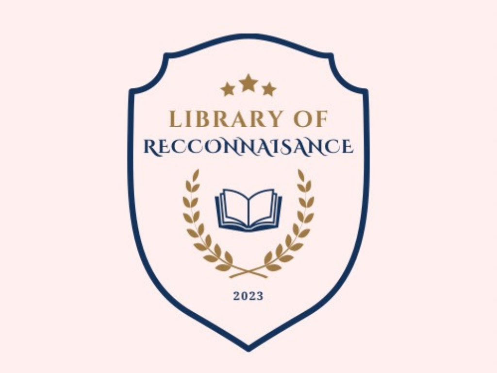
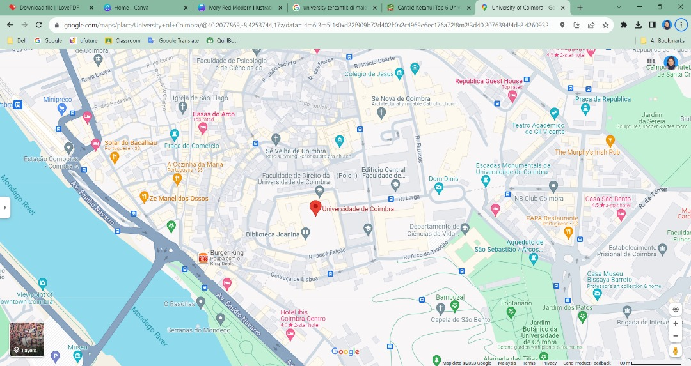

|
|
|---|
OVERVIEWAccording to our discussion, we have decided to choose an academic library as our proposal for a resource center. An academic library is a library that attached to a higher education institution and serves a few main purposes which are providing the curriculum and the research of the university faculty and for students. Unfortunately, it does not have as many materials as the public library has because the target audience are known as community or junior colleges so the materials that were given basically followed by the right audience. For example, fiction and non-fiction book, and also some academic book that will be materials for student to do research. However, academic libraries also help students and researchers develop skills that needed to locate, evaluate, and use information in the library. The Library also supported the teaching & learning process that helps the user to complete their task and get a new knowledge. Based on what we saw in academic library, it can be aimed to have a great purpose and success to the community and the library itself. LORE BACKGROUNDThe Library of Reconnaissance or famously called LORE is an academic library that was created under University of Athenaeum. This University was targeting their students who take part in courses in library management and record management. This student also concludes that who will take part in their last semester for practical under the same courses. Based on our goals for LORE, our University's Library can help in building a place for learning and discovery in the educational community. They can learn how to interact with the user with various types of skills in their educational level along the period they study in here. Not only that, our library also can hold a large amount of material that provided here. not only physically but also in a digital format which can be searched on our Library of Reconnaissance’s websites. LORE is not only known as an academic library only, but it has a lot of special appearances outside and inside of the library. LORE have a good organizational structure and all of the staff or managers do their job smoothly and professionally due to their cooperation with each other. In the Library of Reconnaissance, we have Head of Library, Head of Library Management, Head of University Resources, Head of Digital Library, and the last one is Head of Library Services. If there is any problem and inquiry that may be asked by the user, they can meet each of them based on what problem the user wants to ask. The staff or the manager will give the best services and good interaction with the user. This is because the staff or employees have already been trained in this job with practical under the same courses, and with all of this, it can help to improve their performance in organizing the library. Other information about LORE, it is located at University of Athenaeum and at the strategic places, it has 2 floors and provided services and facilities in the library. The facilities that provided are a Café, an IT Room, Audio Room, Restroom and Discussion Room. It also has stairs at the corner of the building so it will be easier for the user to use and if there is emergency happened, they can use stairs, it also disabled friendly so it can be used for all. Not only that, but LORE also providing varieties of activity in the library for example like 10 Minutes Reading, Blood Donation Campaign, and Festival LORE and many more to keep our Library of Reconnaissance to be livelier and well known by the user, student, researcher and more. Last but not least, LORE has many ways to promote to the audience for example, we have YouTube Channel for our Library of Reconnaissance, Instagram, Billboard and also our library websites. All of the information was up-to-date and will be posted twice in a week so that the user will notify about our library. |
|---|
MOTTO"1 Book, 1 Power" VISIONUniversity's Library that helps in building a place for learning and discovery in the educational community. MISSION• To enhance the teaching, searching and other services that help to promote the Library to the user. • Attract the user to the facilities and services provided in the Library. • Develop a good connection with the user by using information literacy skills. OBJECTIVES• To acknowledge the user about facilities, collection & services that are provided in the Library. • Creating a place that enables the user to find information easily and have unlimited access. • To help students and researchers develop skills needed to locate, evaluate, and use information. It provides instructions, critical thinking, and information literacy skills. • The Library supporting the teaching & learning process that provided instructional materials and tutorials, hosting workshops and events. |
MAPS & LOCATIONLibrary of Reconnaissance (LORE) was located at the University of Athenaeum, Jalan 3004 Coimbra, Malaysia. It was built at the center of the University so that it will be easier to get there. Not only that, LORE was also created at the strategic places because the area has many people. So, if any festival or activities are organized and we want to find some audience, we can just promote to the people in Coimbra’s area to come to our library. The student can come here by using public transport like KTM stations, Light Rail Transit (LRT), Mass Rapid Transit (MRT), and other public transportation in Coimbra. LORE have student who studies under the courses in record management and library management, not only that, the student in this university also have student that have practical in their last semester in becoming the great librarian, there are many things that should be learned in LORE. So, we thought LORE is the best place for them to learn and teach in the process of becoming a better librarian or anything that might practical under this course. |
| See More |
Athenaeum University Courses:1.Diploma in Information Management 2.Barchelor in Library Management 3.Barchelor in Records Management 4.Barchelor in System Management 5. Barchelor in Media Development |
LORE Contact:☎ +60166686786 ✉︎ athenaeuniversity20@gmail.com |
|---|